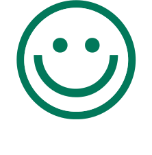

Om
Tak for kaffe er en lille intim cafe med beliggenhed i hjertet af København. Vi er ikke bare en café eller bageri – vi er et mødested for smag, kvalitet og gode stunder. Vi er stolte af at præsentere vores unikke sortiment af håndlavede delikatesser, skabt med omhu og dedikation til at levere den bedste smagsoplevelse til vores kunder. Hos os handler det om autentisk smag, friske råvarer og en forkærlighed for økologi. Vi er taknemmelige for at dele vores lidenskab for kaffe og lækkerier med vores dedikerede kunder. Besøg os, tag plads, nyd atmosfæren, og lad os forkæle dine smagsløg. Tak for at vælge Tak for kaffe – hvor smagen møder dedikation!
Vores vision
Vores vision er at være kendt for vores ekspertise i at skabe lækre, håndlavede produkter, der altid lever op til den højeste standard af kvalitet. Fra vores koldhævede müsliboller til vores glutenfrie knækbrød og kager er vi fast besluttede på at levere en kulinarisk oplevelse, der overgår forventningerne. Derudover ser vi en bæredygtig fremtid som en integreret del af vores vision. Ved at fremme brugen af økologiske råvarer og ved at støtte lokale producenter og bæredygtige initiativer ønsker vi at bidrage til en positiv indvirkning på både miljøet og samfundet.
